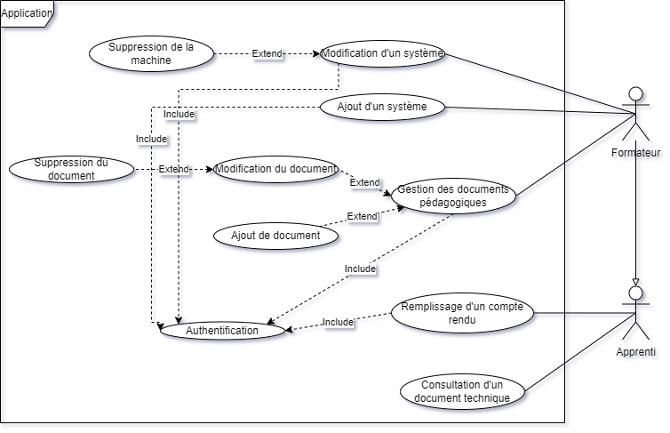
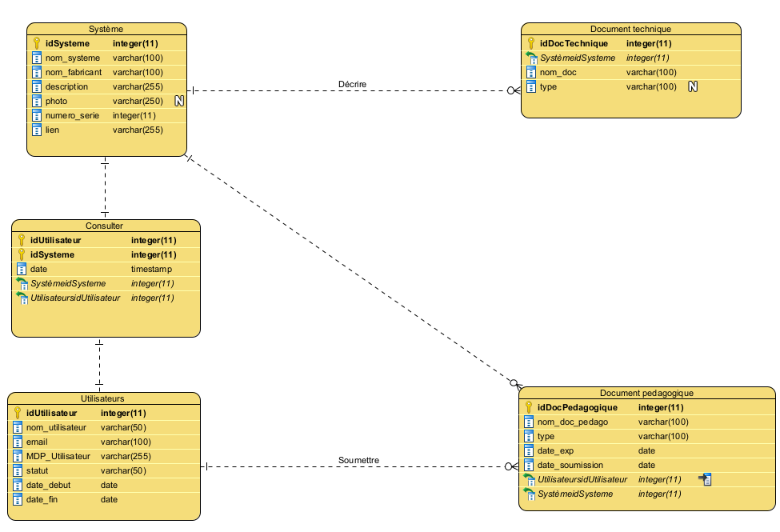
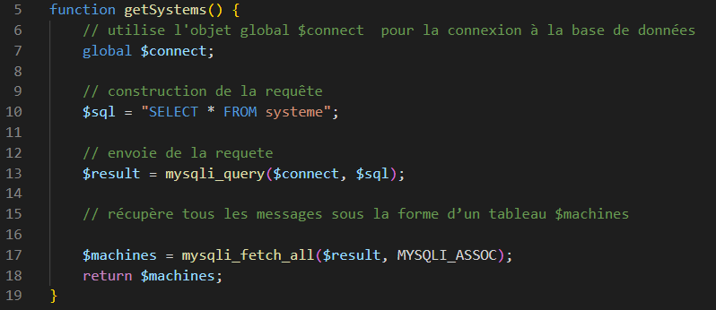
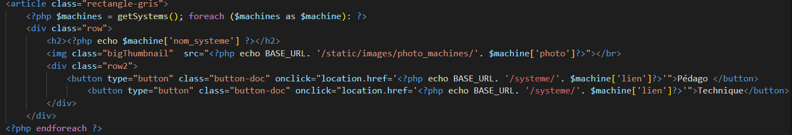
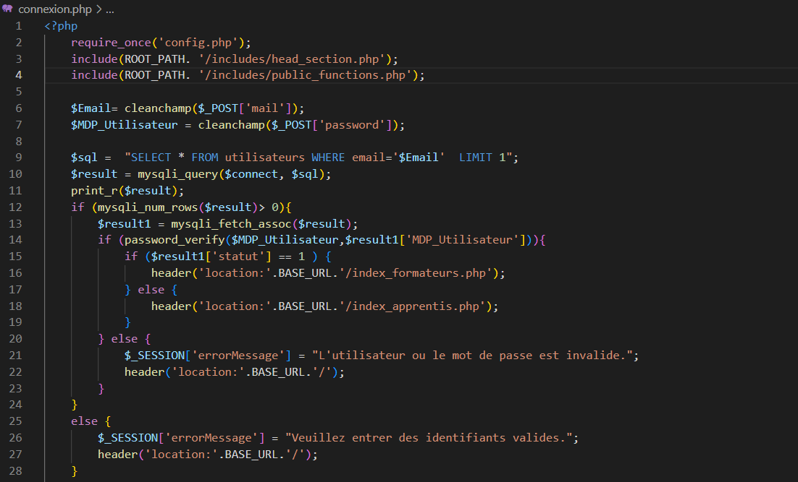
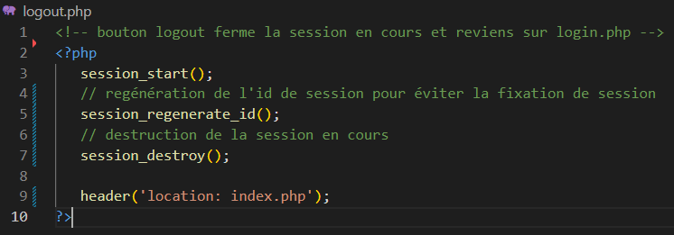

Ce document constitue l'appel d'offre du client.
L'objectif de ce projet est de créer une application contenant la documentation technique ainsi que la documentation pédagogique des machines de l'AFORP.
Nous développons une application qui sera mise à disposition des apprentis via une tablette qui sera fixée devant chacun des systèmes.
Les outils utilisés pour ce projet sont :
- Jira et Confluence : gestion de projet (GANTT, répartition des tâches, documents centralisés)
- GitHub : centralisation des fichiers de l’applicationet la gestion des versions
- Visual Paradigm : Modèles de données
- StarUML : Diagramme de cas d’utilisation
- PHPMyAdmin: gestionnairede base de donnéesMySQL
- Visual Studio Code (éditeur de code): HTML5/CSS3
- Suite MAMP avec le serveur:SGBD MySQL5.7.24/Apache/Interprète PHP 8.0.1
J'ai tout d'abord participé activement à la création du diagramme des cas d'utilisations (ainsi que plusieurs cas d'utilisation) qui permet d'indiquer ce que les utilisateurs pourront faire sur l'application en fonction de leur niveau de droits :
J'ai ensuite pu établir le modèle logique de données qui permet de retranscrire ces cas d'utilisations sous forme de tables, dans le but de créer une base de données :
A partir des modèles de conception (cas d’utilisation, MLD,…) de l’application j’ai créé plusieurs fonctionnalités en PHP
permettant de faire le lien entre la base de données et l’interface utilisateur de l’application (contrôleur d’après le modèle
d’architecture MVC) :
Le premier script créé a été celui qui permet d’exécuter une requête dans la base de données pour récupérer toutes les
informations des systèmes, ces informations sont envoyées à l’interface sous la forme d’un tableau associatif.
Cette fonction est ensuite utilisée dans une boucle qui permet d’afficher chaque machine sur les pages index (en
parcourant le tableau associatif) pour les apprentis ainsi que pour les formateurs avec son nom et sa photo. Un bouton
qui redirige vers la documentation technique est créé et un pour la documentation pédagogique, ceci pour chaque
machine.


J’ai aussi créé un script du nom de connexion.php qui permet à un utilisateur enregistré dans la base de données de se
connecter sur la plateforme. Ce script permet de vérifier que le mot de passe entré corresponde à celui enregistré dans
la base de données (hashé), ceci grâce à la fonction php password_verify qui verifie que le hash corresponde au mot
de passe associé. En cas d’erreur, un message est affiché et l’utilisateur est redirigé vers la page de connexion.
Pour assainir les données fournies via le formulaire de connexion, j’ai créé la fonction cleanchamp laquelle supprime les
espaces non nécessaires des champs du formulaire.

Le fichier logout.php permet lui de déconnecter un utilisateur en fermant sa session, il retire le mail et le mot de passe
de la session en cours avant de rediriger vers la page de connexion.
